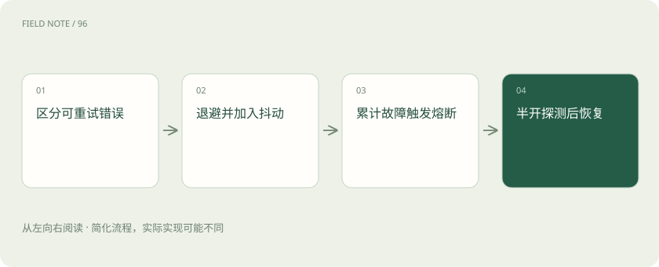

先读哪些知识
先用一个类比理解
像故障电梯，短暂等待可以再试，持续损坏则先封闭检修。
类比只帮助建立直觉，不等同于技术的完整机制。
一图看懂

概念边界
重试用于可能暂时恢复的失败，指数退避和随机抖动让请求避免同时再次冲击服务。超时、限流和参数错误应分开处理；错误参数通常不会因为重复发送而变正确。
内部怎样运作
熔断在失败持续出现时暂时阻止请求，经过等待和探测再恢复。它保护系统资源，但会降低某段时间的可用路径。切换供应商还需检查模型能力、数据边界与工具协议兼容性。
把机制放进具体场景
供应商返回限流时，多个网关若立即同步重试，会形成第二波拥堵。退避拉长间隔，抖动让时点错开；若服务长期异常，熔断先阻止新流量，之后只放少量探测请求，避免所有调用一起恢复。
取舍与容易忽略的限制
重试必须受整条链路的剩余时限约束，否则前端已经放弃，后台仍不断消耗资源。熔断状态也应与具体故障范围对应：某个模型端点失效，不一定意味着所有服务都应停止。恢复探测需要谨慎放量，若瞬间恢复全部积压请求，可能让刚恢复的系统再次进入故障。
放进真实场景
SCENARIO
参数缺少必填字段时，退避等待并不能修复请求；应返回明确错误。临时网络中断则可在总时限内重试，两者不应共用无限尝试策略。
别踩这个误区
多层服务各自重试可能成倍放大流量，应给整条请求链设总时限与尝试预算。
想一想
为什么不能给所有失败都无限重试？
参数错误通常不会自行恢复，重试还会放大流量并耗尽请求时限。
关联阅读
资料与边界
本文为原创知识讲解。类比和图示经过简化；示例数字不代表实测或报价。整理日期：2026-11-04。文末列出对应技术的原始资料，具体功能与版本支持请以原文为准。